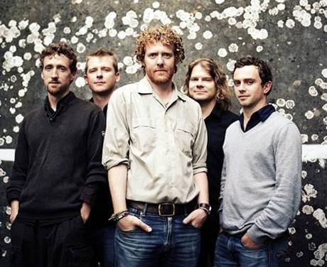
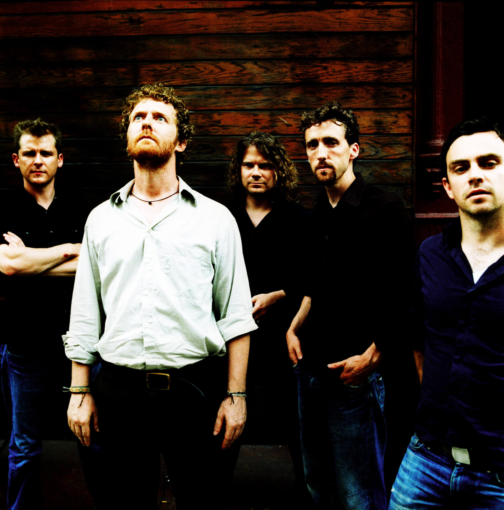

The Frames – весьма известная ирландская инди-рок команда из Дублина. Название, которое переводится как «рамы», навеяно еще с детских времен Глена Хансарда, вокалиста группы, когда он работал в магазине велосипедов, а задний двор его дома был усеян рамами и старыми велосипедами, которые он позже переделывал на новые для своих друзей.  За время существования The Frames поменяли многих участников, которые ранее или позднее выступали в других ирландских рок-проектах. Группа образовалась в 1990 году и имеет немалое значение в развитии молодых рок-команд того времени, в том числе и для Turn, а с многими сотрудничает до сих пор. Как и большинство участников дублинских групп, Глен начал свою карьеру на улице Графтон в Дублине, знаменитую местом сбора уличных музыкантов. Помимо исполнения своего собственного репертуара, The Frames известны также переигрыванием произведений других музыкантов, например, "Redemption Song" Боба Марли, "Ring of Fire" Джонни Кеша и "Pure Imagination" из Willy Wonka & the Chocolate Factory.  В 1991 году Глен обретает известность, снявшись в фильме «Группа Коммитментс», но, как считает сам музыкант, эта роль только отвлекала его в тот период от музыки. Другой член группы Мак Кон Йомаре тоже был замечен в кино, а коллега Глена Бронах Галлахер засветилась даже в «Криминальном Чтиве» в футболке The Frames. Относительно недавно Глен выступил в роли ведущего персонажа комедийно-музыкального сайта eyebrowy.com. В 2007 году снялся в главной роли в фильме «Однажды», к которому сам написал и исполнил практически все песни. Режиссером и сценаристом фильма выступил Джон Карни, бывший басист The Frames. На съемках у Хансарда закрутился роман с молодой певицей Маркетой Иргловой, хотя знакомы они уже много лет. Помимо альбома саундтреков к фильму с Маркетой был записан полноформатник «The Swell Season». А в феврале 2008 года за композицию под названием «Falling Slowly» Глен и Маркета получили Оскар в номинации «Лучшая песня». Начать свой путь в борьбе за "Оскар" можно, выиграв собственный концерт в Ирландии! Запишите кавер на песню любого ирландского музыканта или группы, снимите это на видео, опубликуйте в Youtube, а ссылку пришлите в личные сообщения на странице Просто Радио https://www.facebook.com/ProstoRadi.O.NewRock/ или на irishtrue.vgorode.ua. Все это нужно сделать до 5 декабря.
конкурс